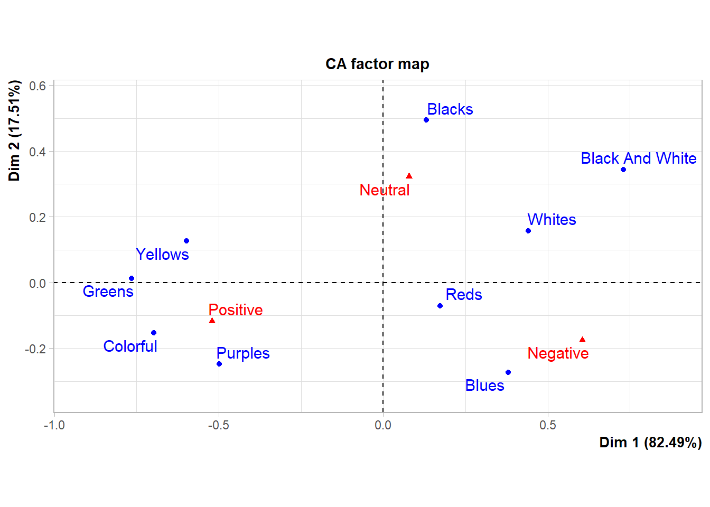
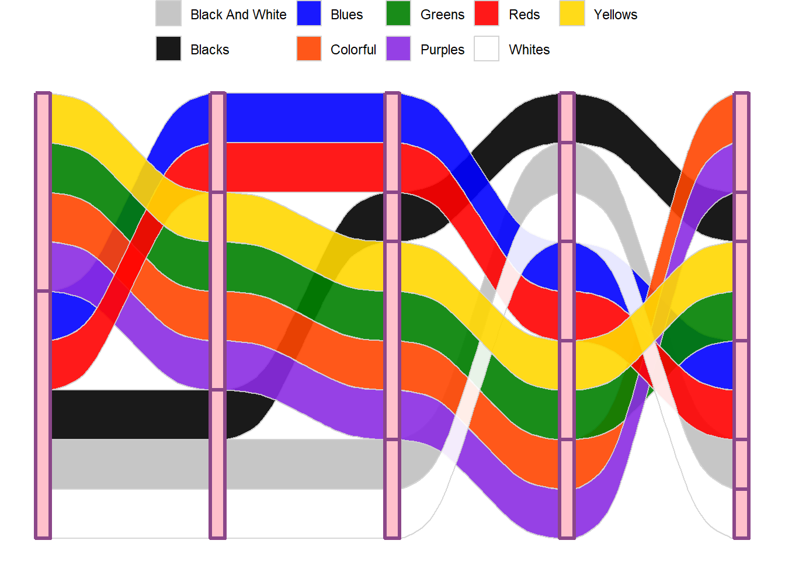

4 Colour Sentiments
## extra packages
require(corrplot)
require(FactoMineR)
require(factoextra)
library(ggalluvial)4.1 \(\chi^2\) test for equal proportions
colorSentimentScores$colourGroup <- colorGroups[colorSentimentScores$colour]
cols.df <- as.data.frame.matrix(table(colorSentimentScores$colourGroup, colorSentimentScores$meaning))
cols.df negative neutral positive
black and white 2 2 0
blacks 3 7 3
blues 18 7 10
colorful 1 3 11
greens 0 3 8
purples 1 1 4
reds 15 11 13
whites 13 12 5
yellows 1 9 17## change col and row names for aesthetic reasons
colnames(cols.df) <- str_to_title(colnames(cols.df))
rownames(cols.df) <- str_to_title(rownames(cols.df))
row.props <- prop.table(as.matrix(cols.df), margin = 1)
corrplot(row.props, is.corr = FALSE, cl.pos = FALSE)The plot above is not a traditional correlation plot, rather each entry is the row-wise proportion of colour mentions across each sentiment. The shade and size of each circle represent the magnitude of each entry, where darker and larger circles correspond to larger row-wise proportions. Evident from this plot is that for Yellows, Purples, Greens and Colorful we see a higher proportion of mentions associated with Positive sentiment.
Below we carry out a (Pearson’s) chi-squared test where the null hypothesis is that the joint distribution of the cell counts is the product of the row and column marginals:
\(H0\): colours and sentiments are independent vs \(H1\): colours and sentiments are dependent,
## chi-squared test
chi <- chisq.test(cols.df)
chi ## strong evidence against NULL
Pearson's Chi-squared test
data: cols.df
X-squared = 47.661, df = 16, p-value = 5.369e-05corrplot(chi$residuals, is.corr = FALSE, cl.pos = FALSE)Again, the plot above is not a traditional correlation plot, each entry is the \(\chi^2\) residual (i.e., a measure of deviation from the expected). Red hues indicate fewer than expected counts, and blue hues indicate higher counts than were expected. The sizes and shade of each circle reflect the magnitude of the deviation. Looking at the Yellow row we see that we observe far fewer mentions with negative sentiment and more mentions with positive sentiment, than we might expect under equal counts. Referring back to the table of counts this is clear to see.
4.2 Correspondence analysis
So, as we suspected from the table alone it seems likely that there is some dependence between colour mentions (in Taylor’s lyrics) and the sentiment of the lyrics. What we’d like to do is further delve into the association between colours and their associated sentiment in Taylor’s lyrics. To do this we can carry out correspondence analysis (CA):
coa <- FactoMineR::CA(cols.df)
The biplot above shows the relative positions of the rows (colours) and the columns (sentiments). Now, we are not interested in representing the contingency table above in a lower dimension space using correspondence analysis. Rather, we are interested in the relative associations between colours and sentiment. The plot above is termed a symmetric plot and shows a global pattern: the distance between any row points (colours) or column points (sentiments) gives a measure of their similarity or dissimilarity, we cannot from this plot compare associations between colours and sentiments directly. However, in general we can see that Yellows, Purples, Greens and Colorful are mainly mentioned in association with Positive sentiments etc.
In order to interpret the distance between sentiments and colours we need to use an asymmetric biplot (see below).
First, let’s describe each dimension. (Note this should be done with care! Avoid reification (i.e., reading something tangible into the dimensions)). We are particularly interested in the sentiments (i.e., column variables) representation of the dimenesions.
coa$col$coord Dim 1 Dim 2
Negative 0.60492700 -0.1746621
Neutral 0.07774606 0.3226498
Positive -0.52031114 -0.1170984## plotting
data.frame(coa$col$coord) %>%
mutate(variables = rownames(.)) %>%
pivot_longer(., cols = 1:2) %>%
ggplot(aes(value, variables, fill = value)) +
geom_col() +
geom_vline(xintercept = 0, lty = "dashed", col = "darkgrey", linewidth = 2) +
facet_wrap(~name, scales = "free_y") +
labs(fill = "Relative\ncontribution",y = NULL, x = NULL) +
theme_bw() + scale_fill_gradient2(low = "darkblue", mid = "white",high = "darkred")Each panel of the plot above shows the relative contribution of sentiments to each new dimension. The size and shade of each bar represents the magnitude of the contribution. The vertical grey line (at 0) highlights the direction of the contributions.
Therefore (roughly speaking) lower -ve values in Dim 1 are more Positive in sentiment and +ve values are more Negative (values close to 0 are Neutral). The absolute direction of the values here are meaningless; it is the relative direction we are interested in, and so Dim 1 can be thought of as a measure of either Positive or Negative sentiment (let’s call it feeling). Dim 2 might be thought of as conviction of sentiment (or feeling), higher values reflecting Neutral feelings.
Now, let’s look the degree of association between the rows (colours) and the axes. The returned cos2 measure represents the quality of representation (i.e., degree of association), it takes values between 0 and 1.
coa$row$cos2 Dim 1 Dim 2
Black And White 0.81876976 0.1812302419
Blacks 0.06600422 0.9339957761
Blues 0.66084920 0.3391507987
Colorful 0.95390800 0.0460919952
Greens 0.99970382 0.0002961754
Purples 0.80178643 0.1982135704
Reds 0.85809051 0.1419094921
Whites 0.88762796 0.1123720391
Yellows 0.95677338 0.0432266171corrplot(coa$row$cos2, is.corr = FALSE, cl.pos = FALSE)Again, this is not a traditional correlation plot. Each entry represents the association between the colours (row vaiables) and the dimensions. From this all colours (bar Blacks) are strongly associated with the feelings dimension. Mentions of the B;acks* colour groupings are morse associated with Dim 2 the conviction dimension; this, is also evident from the contingency table above where most mentions of this group were associated with Neutral sentiments.
Ideally, what we’d like to do is both compare the association between colour groups AND the associations between colour groups and sentiments. To do this we create an asymmetric biplot and represent columns (sentiment) in row (colours) in space (by setting map = "rowprincipal" in the call to fviz_ca_biplot() below). Doing this also better shows the relationships between the colours.
## row/colour contribution asymmetric biplot
fviz_ca_biplot(coa, repel = TRUE, col.col = "brown", col.row = "purple",
map = "rowprincipal", arrows = c(TRUE,TRUE)) + ggtitle("") +
theme_void()Adding arrows to the biplot let’s us assess the degree of association between colours and sentiments. An acute angle between two arrows indicates a strong association between the corresponding row (colour) and column (sentiment). From the plot above Purples have the strongest association with Positive sentiment, Reds & Blues with Negative and Blacks with Neutral.
4.2.1 Reducing dimensions
It’s not like we have swaths of variables! But, let’s explore! We saw from above that each colour (bar Blacks) was strongly associated with the first dimension (i.e., feelings). Below we look as the percentage of variation explained by each dimension.
coa$eig eigenvalue percentage of variance cumulative percentage of variance
dim 1 0.21841337 82.4876 82.4876
dim 2 0.04636992 17.5124 100.0000Dim 1 (i.e., feelings) explains ~82% of the total variation. Pretty much most of it! This makes sense as it is basically a rotation of the linear sentiment scale we initially assumed when scoring the lyrics! Let’s have a look as this one dimension on it’s own, recall that we’d like to do this and examining the association between colours (i.e., a spce that represent columns (sentiment) in row (colours) in space).
4.3 Cluster analysis of CA colour scores
Recall, we are interetsted in the association between colours. Having carried out CA, we have a decent idea of which colours are associated with what semtiments etc. The representation of our colours in reduced dimensinal space are:
coa$row$coord Dim 1 Dim 2
Black And White 0.7303704 0.34361934
Blacks 0.1313584 0.49413385
Blues 0.3808608 -0.27284216
Colorful -0.6968777 -0.15318495
Greens -0.7643240 0.01315577
Purples -0.4987625 -0.24798828
Reds 0.1736515 -0.07061839
Whites 0.4418876 0.15722641
Yellows -0.5975927 0.12702125corrplot(coa$row$coord, is.corr = FALSE, cl.pos = FALSE)
Recall from above, we loosely termed Dim1 a measure of feeling (higher values were more Negative) and Dim2 (higher values were more Neutral) a measure of conviction. From the plot above (not a traditional correlation plot) we could infer that Greens were typically associated with strong Positive feelings and Blues with weak Negative feelings and weak convictions (i.e., not-neutral).
data <- coa$row$coord
## k-means clustering
set.seed(4321)
## two clusters
k2 <- kmeans(data, centers = 2, nstart = 25)
## three clusters
k3 <- kmeans(data, centers = 3, nstart = 25)
## four clusters
k4 <- kmeans(data, centers = 4, nstart = 25)
## five clusters
k5 <- kmeans(data, centers = 5, nstart = 25)
## six clusters
k6 <- kmeans(data, centers = 6, nstart = 25)Rather than delve straight into deciding “how many” clusters are appropriate let’s first look at how the colour groupings/clusters change based on our choice of cluster numbers. An alluvial plot shows these transitions nicely, although a bit of set-up is required first! Recall that these clusters are based on the CA coordinates of the colours in what we termed1 feeling and conviction space.
clusters <- data.frame(k2$cluster, k3$cluster, k4$cluster, k5$cluster, k6$cluster)
clusters <- clusters[c(2, 1, 8, 3, 7, 4, 6, 9, 5),]
names(clusters) <- paste(2:6, "clusters")
clusters$Group <- rownames(clusters)
#clusters$cols <- colorPaletteGroups[tolower(clusters$Group)]
names(colorPaletteGroups) <- str_to_title(names(colorPaletteGroups))
# Plot as alluvial
ggplot(clusters,
aes(axis1 = `2 clusters`, axis2 = `3 clusters`, axis3 = `4 clusters`,
axis4 = `5 clusters`, axis5 = `6 clusters`, y = 1)) +
geom_alluvium(aes(fill = Group), width = 1/12, alpha = 0.9, col = "lightgrey") +
scale_fill_manual(values = colorPaletteGroups, name = "") +
geom_stratum(width = 1/12, fill = "pink", color = "orchid4", linewidth = 1.2) +
#geom_text(stat = "stratum", aes(label = after_stat(stratum))) +
theme_void() + theme(legend.position = "top")Each stratum (pink box) represents the number of clusters set from two (far left) to six (far right). These clusters were estimated based on the distances in CA score space where the variables were abstract constructs, which we termed feeling and conviction. That aside, we can see from this alluvial plot which colour groupings are close toegther in this space, and when the split in each cluster occurs. Following Yellows, Purples, Greens and Colorful (which from the start we saw were all closely related with Positive sentiments), when we force the algorithm to choose five clusters, Yellows & Greens separate from Purples & Colorful, whcih by looking at the asymmetric biplot makes sense, despite the clear close association between the four colour groups in the sentiment space, the further subsetting splits according to the maximum distance in this space.
If we really want ro choose an appropriate number of clusters then we can use the total within cluster sums of squares (SS), which we’d like to minimize!
## "best" representation using a rather 'adhoc'
## total within SS
barplot(c(k2$tot.withinss,k3$tot.withinss,k4$tot.withinss,
k5$tot.withinss, k6$tot.withinss),
names = paste(2:6," clusters"))
This is a rather ‘ad hoc’ method, but from the barplot we cannot see much relative tangible reduction in SS after four clusters. So, let’s look at these below.
fviz_cluster(k4, data = data) + theme_bw()
Makes sense based on even our initial CA biplot!
important to note that these are abstract constructs!↩︎